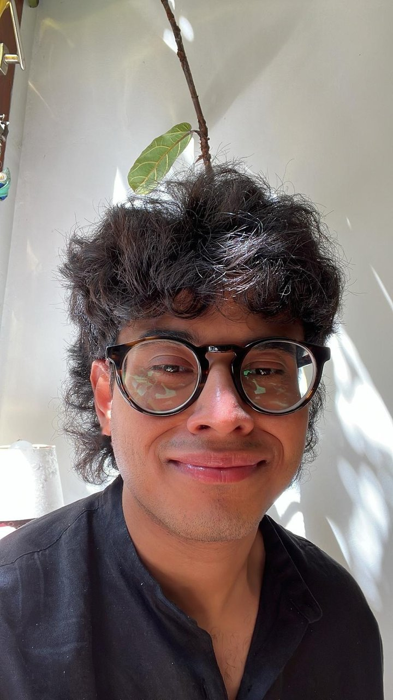

PhD student · SMIT, Vrije Universiteit Brussel
Atri Mukherjee
I am a PhD student at the NUSE Unit of SMIT (Studies in Media, Innovation and Technology), in the Department of Communication Sciences at the Vrije Universiteit Brussel.
My doctoral research examines how social class shapes people’s relationship to political news. Drawing on Bourdieu’s theory of cultural capital, I approach class as multidimensional, considering both its economic forms, such as income, and its cultural forms: institutionalized (educational credentials), objectified (cultural possessions), and embodied (dispositions and tastes, as expressed in engagement with highbrow institutions). I ask four related questions: which political news people are interested in, what they actually consume, through which channels and platforms they encounter it, and what purposes they believe it serves.
More broadly, I am interested in the class aesthetics of political media use, that is, how taste and style mark social differences in the ways people engage with politics through media. I also study how young people come to perceive social mobility and stratification through the media they use.
Top Faculty Paper, Journalism Division, ICA26
Beyond socioeconomic status: Cultural capitals as class inequalities in high-choice news environments, written with Antonis Kalogeropoulos, Courtney Tabor and Patrícia Rossini. See the paper.